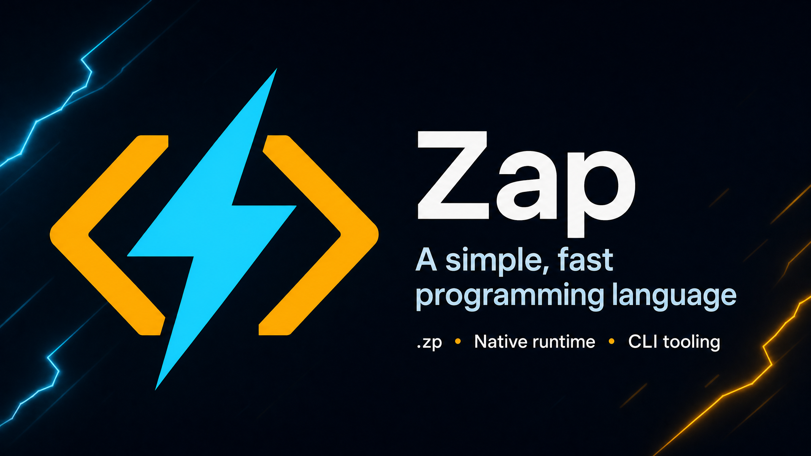

ENRecommended start
English documentation
Lessons, examples, installation steps, modules, Result/Option values, and the ? propagation operator.
A clear path from first program to real software
A simple, readable general-purpose programming language with .zp source files and a standalone native runtime.

Choose your language
Start with a guided course, then use the syntax reference when you need a precise lookup.
Lessons, examples, installation steps, modules, Result/Option values, and the ? propagation operator.
မြန်မာဘာသာဖြင့် lesson များ၊ syntax ရှင်းလင်းချက်များနှင့် လက်တွေ့ code examples များကို လေ့လာနိုင်ပါသည်။
Live project health
The repository validates every pull request and push, then builds release binaries for the supported platforms.

For the most recent run result, open the workflow links above. GitHub provides the live check status and full build logs.
Explore the language